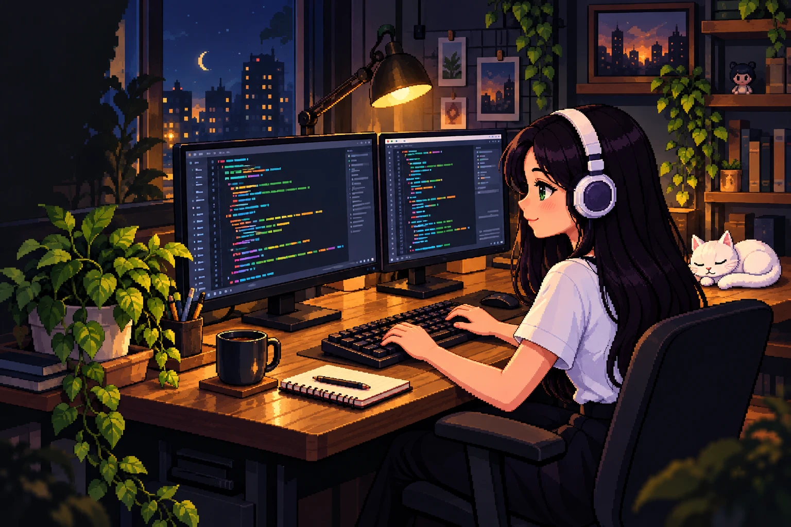

Benja Barber
Concepto · Barbería
Hola, soy
Soy desarrolladora de software y estudiante de Ingeniería. Trabajo con .NET y C#, y creo sitios web para profesionales y emprendimientos.
Desde Montevideo, Uruguay.

Una selección de sitios web, vistos desde el celular.
Concepto · Barbería
Demo · Entrenamiento
Emprendimiento
Demo · Belleza
Demo · Web profesional
Soy desarrolladora de software y estudiante de Ingeniería. Mi experiencia incluye desarrollo backend con .NET y C#, mantenimiento de aplicaciones y resolución de problemas.
También creo sitios web para profesionales y emprendimientos. Me gusta el diseño, las ilustraciones y encontrar la forma de llevar una idea a la web.
Hablemos.NET y C#.
Sitios para profesionales y emprendimientos.
Explorar, aprender y seguir creando.
¿Tenés un proyecto en mente? Contame qué necesitás y lo conversamos.
hola@jrcweb.tech